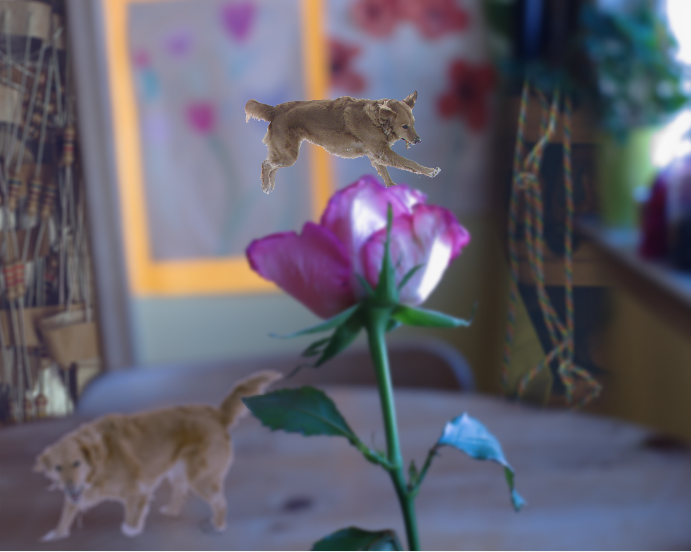

Menu
Eden S.-G.
Elements & Principles
Filters
Triptych
Typography
Soundscape
Stop-motion
Surrealism
iPad Photo Manipulation
About me
>
Eden S.-G.
Surrealism

Your browser is out-of-date!
Update your browser to view this website correctly.
Update my browser now
Close